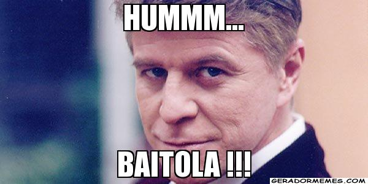

Dicionário do Nordestino
Letra B

BAITOLA - Viado. (A palavra tem origem na construção da primeira estrada de ferro do Ceará. O chefe da obra era um engenheiro inglês, muito afetado, que repetia "atenção para a baitola" se referindo a bitola (distância entre os trilhos).
BAIXA DA ÉGUA - Lugar distante.
BAIXAR O LOMBO Emagrecer.
BALAÇAR A TANAJURA - Dançar.
BALADEIRA – Estilingue.
Voltar | Mais